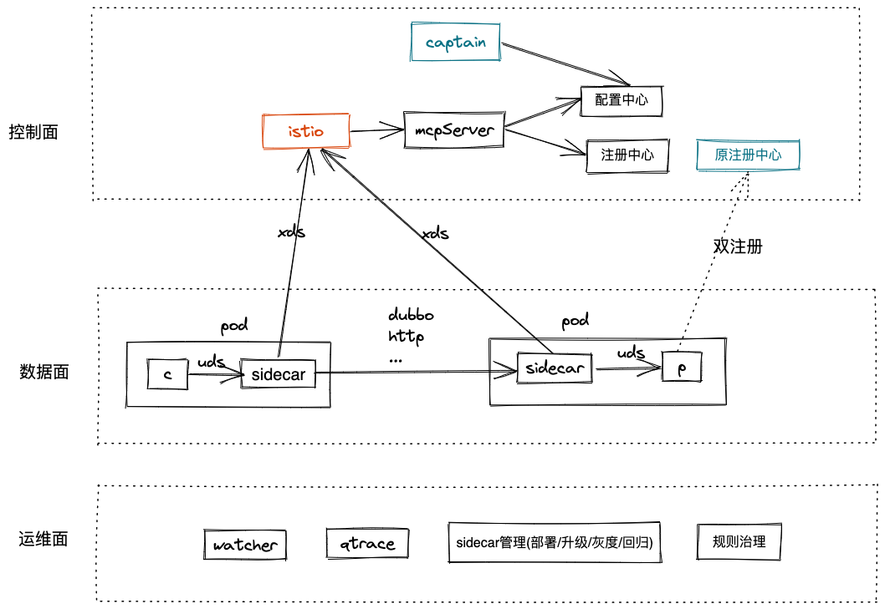
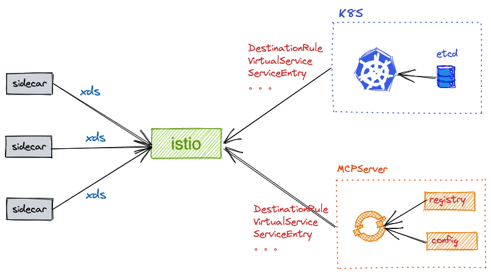
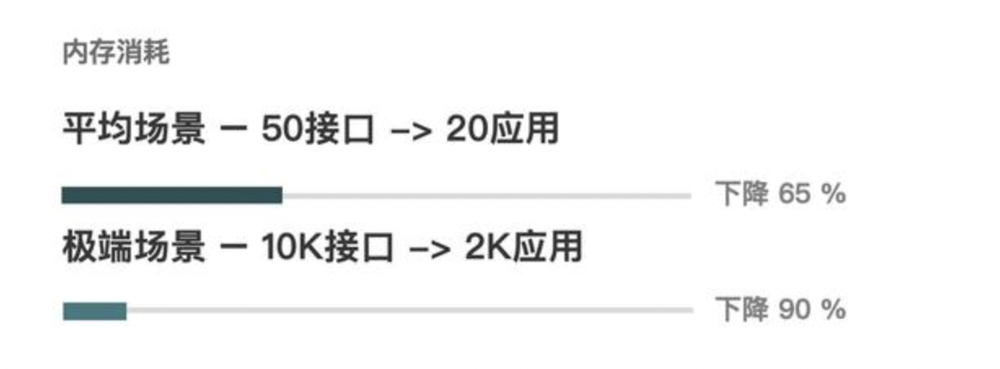
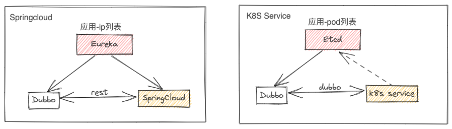
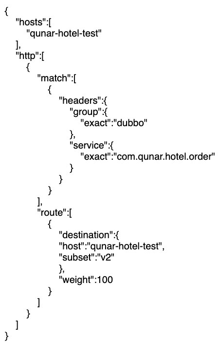
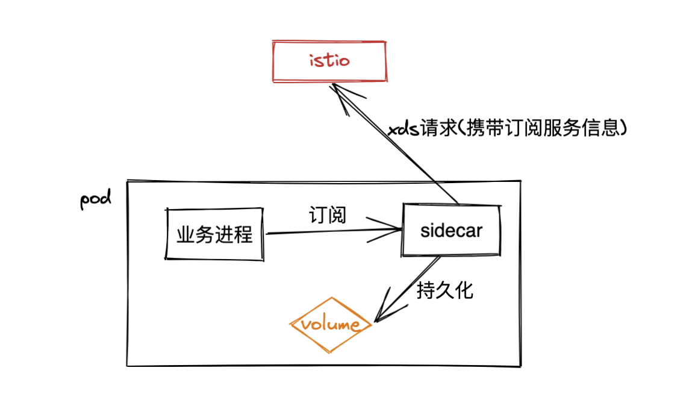
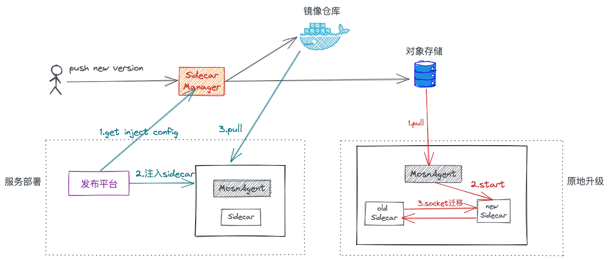
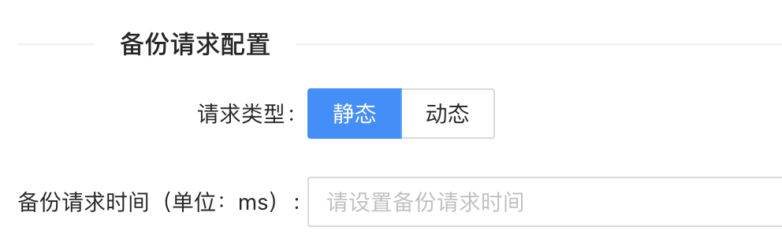
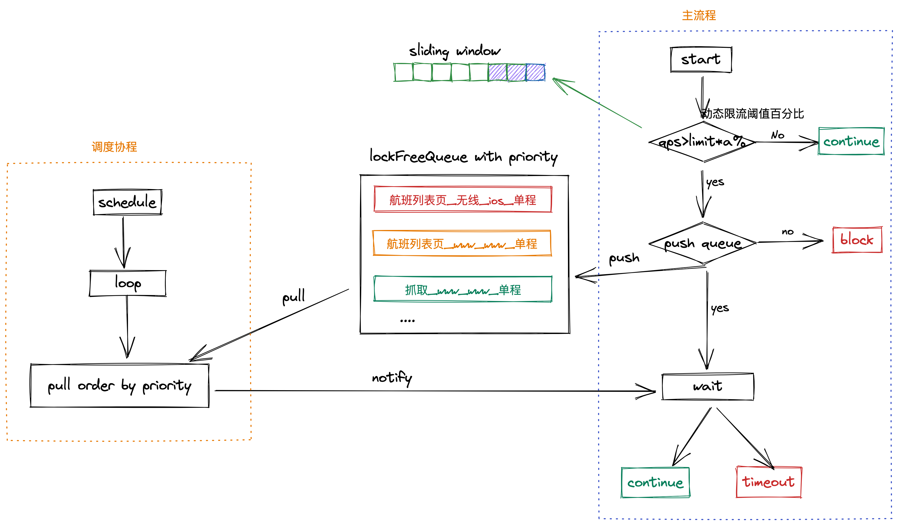

1.背景
1.1 ServiceMesh定义
在云原生架构里，单个应用程序可能由数百个服务组成；每个服务可能有数千个实例；而且这些实例中的每一个都可能处于不断变化的状态，因为它们是由像 Kubernetes一样的编排器动态进行调度的，所以服务问通信异常复杂，Service Mesh就是用来解决应用间稳定高效的通信问题产生的，以下是Buoyant 的创始人 Wiliam Morgan，于 2016年9月在SFMicroservices 的Meetup上第一次提到 Service Mesh，并且在其公司的博客上给出了 Service Mesh定义：
A Service Mesh is a dedicated infrastructure layer for handling service-to-service communication. It’s responsible for the reliable delivery of requests through the complex topology of services that comprise a modern， cloud native application. In practice， the Service Mesh is typically implemented as an array of lightweight network proxies that are deployed alongside application code， without the application needing to be aware.
服务网格（Service Mesh）是处理服务间通信的基础设施层。它负责构成现代云原生应用程序的复杂服务拓扑来可靠地交付请求。在实践中，Service Mesh 通常以轻量级网络代理阵列的形式实现，这些代理与应用程序代码部署在一起，对应用程序来说无感知。
通俗来说，Service Mesh就是增加了一个额外进程，代理业务进程的流量，在这个额外进程中集成各种治理能力，sdk仅负责服务编解码以及与额外进程的通信。
Service Mesh通常由两部分组成，数据平面和控制平面。
这个额外进程即为数据平面。常称为sidecar，sidecar的存在形式通常是与业务进程共享一个pod，由于和业务进程隔离，基础组件的同学可对sidecar进行独立升级部署，业务同学只需专注业务逻辑，减轻其心智负担。
控制平面通常是一个集中式服务，与数据面进行通信，下发治理参数，如路由规则，实例列表，重试超时配置等。
1.2 去哪儿网服务治理遇到的问题
去哪儿网内部已实现微服务架构多年，协议以dubbo/http为主，开发语言以java为主，同时存在golang、python、node等，随着业务的不断发展，一些服务治理上的问题逐渐凸显：
- 业务与中间件强耦合，迭代周期长，当sdk出现问题，需要业务方跟着升级或回滚。生产环境版本众多，每次迭代都需要做好向前兼容。
- 多语言治理复杂，每个治理逻辑需要开发不同语言版本。工作冗余，维护成本高。
- 公司内部dubbo治理相对完善，但http治理相对薄弱，业务方主要使用openRestry进行治理。其他的需求零散分布在不同平台，这对开发同学极不友好。
- 治理能力的不统一导致重复轮子的出现。费时费力，增加了维护成本。
基于以上痛点，我们期望构建这样一个服务治理体系
- 统一治理，http/dubbo，java/golang/python多语言多协议都可以在服务治理平台统一治理。
- 治理能力增强，能够补充当前缺失的服务治理功能。化零为整，降低用户去多个平台逐一治理的使用成本。
- 治理能力下沉，基础组件开发周期和业务开发周期解耦。快速迭代，快速推广。
- 操作友好，尽量保留用户的使用习惯，以产品思维，从用户角度出发。
在21年我们逐步进行了容器化落地，因此结合Service Mesh我们开始重建自己的服务治理体系。
2.实践框架
2.1 技术选型
由于Service Mesh在业界已经有非常成熟的产品，因此我们不需要重复造轮子。基于已有能力快速享受mesh化带来的红利。
我们调研了国内外部分厂商的Service Mesh产品以及落地方案，整理如下(如有差异，请联系我们及时更正)。
| 产品 | 数据面 | 控制面 |
|---|---|---|
| (google/ibm/lyft)istio | envoy(c++) | pilot(golang)，与k8s强耦合 |
| (腾讯)TSF | envoy(c++) | pilot(golang)，基于pilot二次开发，解耦了k8s |
| (头条)ByteMesh | envoy(c++) | 自研 |
| (美团)OctoMesh | envoy(c++) | 自研为主 |
| (蚂蚁金服)SofaMesh | mosn(golang) | pilot(golang)，开源可对接istio |
| (微博)WeiboMesh | 自研(golang) | golang |
| (华为)cesMesh | 自研(golang) | golang |
| (唯品会)OSPMesh | 自研(java) | |
| (陌陌)MOAMesh | 自研(java) | golang |
在选型时，我们考虑了几点因素。
- 产品是否成熟
- 社区活跃度
- 性能是否满足公司需求
- 开发和维护难度， 部门内主要使用java开发语言，尽可能控制不同语言的引入
- 最大程度使用开源产品，避免重复造轮子
控制面：istio的xds协议已经成为Service Mesh的事实标准，因此在控制面我们选择istio。
数据面：考虑性能需求，学习成本，扩展性，社区活跃度等，我们选择和mosn合作共建。非常感谢在落地期间，社区提供的很多帮助。
mosn是蚂蚁金服开源的一款数据平面，既可以替代envoy，也可以集成envoy在网络层高性能的优势作为mosn的网络插件。
2.2 整体架构

qunarMesh整体分为三部分，数据面、控制面、运维面。
2.2.1 解耦k8s
调研时，我们发现istio与k8s耦合严重，主要体现在
- 作为注册中心，负责实例注册，状态维护。
- 作为配置中心，存储各种流量策略，安全策略等资源。
- sidecar管理，基于k8s的admissionController机制，控制sidecar注入。
- istio启动配置，依赖k8s的ConfigMap。
- 网络模型，通过initContainer修改iptables规则劫持流量。调用时，依赖k8s的service模型。
是否要强依赖K8S，需要思考几个问题。
- 内部容器和kvm共存，如何兼容？
- k8s存储是以应用为维度，但是dubbo以service为维度，如何解决维度不统一问题？
- 内部有比较成熟的注册中心和配置中心，一刀切必然引入很多适配问题以及运维成本。
- 如有定制化需求，修改k8s的成本和影响范围过大。
因此我们解耦了k8s， 使用内部注册中心和配置中心，并自研MCPServer模块替代k8s对接istio。
2.2.2 数据面
接入Service Mesh之后，sdk只需要负责编解码和与sidecar通信。 那么sdk原本的功能就需要sidecar来实现，这里面有几个问题需要我们思考。
- 1.服务状态维护问题，如服务注册、心跳、健康检查、下线等。
- 2.sdk与sidecar通信问题，流量如何拦截到sidecar？通信方式和协议是什么？
- 3.每个请求由原来两个节点间通信变成四个节点间通信，如何确保通信的稳定性？
业务进程的生命周期管理
原生istio依赖k8s管理服务生命周期，通过kubelet模块来检测容器状态，并注册到etcd。
解耦k8s之后，需要我们去维护业务进程的状态，我们基于mosn提供的灵活的扩展机制，对接了内部注册中心。
流量拦截
如何把流量从sdk拦截到sidecar？业界主要使用两种模式，1.iptables拦截 2.流量转发
考虑到iptables可运维性和可观察性差，在配置较多时，会出现性能下降。更多的公司采用了流量转发的机制。
如何将流量转发到本机sidecar，我们想到的几种方式
- 升级sdk，在sdk中直接将请求转发到127.0.0.1。
- 对于域名访问，在解析时进行拦截，例如使用dnsMasq将 xx.qunar.com的请求，转发到本机127.0.0.1。
- 基于名字系统，在服务发现返回时，重写实例地址为127.0.0.1。
- 基于agent动态修改请求地址。
结合公司内部情况，我们采用了1，2两种方式。
uds通信
因为业务容器与sidecar容器同属一个pod，我们使用unix domain socket进行通信，规避网络栈，优化性能。
dubbo协议优化
sidecar在接收到请求后，第一步是获取路由信息，用以服务寻址，按照dubbo原有协议设计，路由信息(service/method/group等)存放在body中，为避免不必要的body反序列化，我们对内部dubbo协议做了扩展，将路由信息放置到扩展header。
流量安全
引入Service Mesh后，原来两个服务的调用，现在变成了四个服务间的调用，不稳定性增加，因此需要确保，当Service Mesh出现问题时，尽可能的保障流量的安全。
- sdk自动调用降级 当业务进程与sidecar连接断开(基于健康检查)，降级为直连调用。
- sidecar节点故障剔除
sidecar会对upstream的节点列表进行健康检查，一旦连接异常，快速剔除。 - 一键切换Service Mesh 在captain(新的服务治理平台)中，用户可以一键切换直连模式。
- 柔性可用
控制面出现问题时，sidecar使用缓存数据，保证可用。 当注册中心或配置中心出现异常，MCPServer以及istio使用缓存数据，保证可用。
2.2.3 控制面
控制面的主要职责是与数据面通信，下发XDS配置。
这里简单介绍下XDS，X代表一系列的发现服务，如CDS（cluster），RDS（router），EDS（endpoint），LDS（Listener）等，简单来说，数据面收到XDS配置后，就可以知道当前的sidecar需要监听哪些端口，接收到流量后，如何路由，如何负载均衡，如何调用等等。 前面我们说过，istio依赖k8s作为注册中心和配置中心，那么解耦k8s之后，我们如何打通内部系统？
istio在设计之初，完美支持了http服务，那么在接入私有协议时，又有哪些问题需要考虑？
XDS作为标准协议，是否一成不变的落地到服务治理当中？
在调研和落地过程中，我们也在思考这些问题。
2.2.3.1 自研MCPServer
istio提供了mcp(mesh configuration protocol)协议，旨在解耦istio与底层平台的强依赖。本质上是通过grpc双向流，MCPServer携带DestinationRule，VirtualService，ServiceEntry等istio对象数据，传递给订阅端(istio)。 
通过上图，可以清晰的看出，MCPServer所处的位置以及功能。
MCPServer实现起来逻辑并不复杂，主要是围绕istio对象（即ServiceEntry，VirtualService等）的生成、转化、存储、传输等。
2.2.3.2 统一注册模型
对于http服务，注册中心数据以应用为维度，即应用-实例。
而对于dubbo服务，注册中心数据则以接口为维度，即接口-实例，这会导致一些问题。
性能问题
注册数据冗余，当集群规模变大时，服务数据激增，下图为应用-实例注册模型和接口-实例注册模型的对比。

异构体系下互通问题
注册模型不一致，会导致互通时寻址问题

生成istio资源复杂度问题

我们为每个应用生成一个VirtualService(可参考https://istio.io/latest/docs/reference/config/networking/virtual-service/ )，VirtualService中生成不同的router。
上图以 group/service两个维度为例，展示了其中的一个router，这个router是MCPServer负责生成和维护的，如果再增加method维度，或者其他路由维度，那需要维护的router数量将是指数级的增长，且在实际设计和编码过程中，考虑非常多的case，复杂性和可维护性都会是个问题. 这个本质上是路由粒度问题，粒度越细，问题会变得越复杂。
基于以上三点考虑，最终的方案是统一注册模型，以应用为维度。我们看到dubbo在3.0版本，也是使用了应用级别服务发现，全面拥抱云原生。
2.2.3.3 xds配置按需下发
原生istio会将集群中所有的xds资源下发到每个sidecar，导致sidecar内存过大，资源冗余，单个资源的变更会推送到所有sidecar。 资源占用以及推送风暴大大制约Service Mesh集群规模。

1.sidecar提供sub接口，用于业务进程订阅服务列表。
2.业务进程启动时，sdk会扫描要调用的服务，请求sidecar订阅接口。
3.sidecar在获取xds配置时，会携带订阅信息(此处扩展了istio协议)。
4.istio按需下发配置。
为了避免sidecar重启或者升级导致的订阅信息丢失，会持久化到pod存储。
2.2.3.4 保留用户习惯
按照xds协议，在进行服务治理时，通常用到VirtualService，DestinationRule这两个自定义资源对象，我们以一个路由设置为例。
- 让用户设置路由来源，比如header中包含user=qunar，以此来生成VirtualService的match部分。
- 设置路由目的地，比如labels包含 env=prod1，以此来生成DestinationRule的subset以及VirtualService的router部分。
根据这两步，就生成了一个路由规则，包含了两个资源(DestinationRule和VirtualService)，在此路由规则中，能够设置超时，重试，负载均衡等治理参数。 当一个请求过来时，如果header中包含user=qunar，会路由到labels包含env=prod1的实例集合。
但是在实际使用中，超时时间等一些治理参数和路由的相关度较低，用户更习惯于，作为服务提供方，配置某个接口的超时时间，或者作为服务调用方，配置下我要调用的那个服务的超时时间。
在xds协议中，超时时间等治理参数都是配置在服务提供方，且与路由绑定， 因此，我们做了部分扩展，用户可以从服务提供方，调用方两个角度来配置，以接口为维度，而不是以路由为维度。这些配置包括超时、重试、备份请求、负载均衡策略等， 调用时生效优先级为 调用方配置>服务方配置>兜底。
2.2.4 运维面
运维面主要负责sidecar的配置，部署，升级，回滚，灰度等，各种协同系统对接。
接入Service Mesh，pod中增加了sidecar容器，在解耦k8s之后，在容器注入，启动，配置等有哪些要注意的？
sidecar注入和升级

2.2.4.1 注入
服务部署时，发布平台会请求sidecar管理平台，获取sidecar配置，包括是否注入、sidecar版本、环境变量、配额信息等，然后生成服务的yaml配置。
<<<<<<< HEAD:micro_service/servicemesh.md
2.2.4.2 升级
=======
2.升级
ebooks:servicemesh/servicemesh.md
sidecar升级分为两个场景，1.sidecar原地升级，不需要服务的重新部署，此时需要确保升级对用户透明，流量无损 2.服务部署时升级
原地升级
sidecar容器和业务容器是同属一个pod的两个独立容器，MosnAgent进程作为sidecar容器的1号进程，用于管理sidecar的生命周期，例如启停，健康状态，升级等。
在新版本发布时，会将sidecar镜像推送到镜像仓库，同时将二进制包推送到对象存储。
我们通过sidecar管理平台，可以对sidecar容器发送升级指令，mosnAgent会去拉取对应版本的mosn包，之后启动新版本mosn，并通过fd迁移机制，完成无损升级流程。
部署时升级
通过在sidecar管理平台修改配置，管理应用的sidecar版本，在下次部署时自动升级到对应版本。
sidecar容器启动顺序问题
在sidecar容器未启动成功或者配置未拉取成功，但是业务容器已经ready，会导致请求失败。可以设置sidecar先于业务容器启动，并通过配置k8s的postStart钩子函数，来保证正确的启动顺序
配置下发顺序问题
istio下发配置时，可能导致异常发生，新增路由时，应先下发DestinationRule，再下发VirtualService。删除路由时，先下发VirtualService，再下发DestinationRule。 其次可以通过istio merkel tree来跟踪资源下发的进度，通过暴露接口，来查询每个资源，是否全量下发到sidecar。
协同系统的对接
对接内部系统，如内部配置中心，全链路监控系统，报警系统，对接镜像仓库，对接镜像仓库，对象管理系统等，实现sidecar的资源管理
3.治理功能扩展
引入Service Mesh，对于中间件开发者来说收益无疑是巨大的，与业务解耦，缩短推广周期。那么如何让业务开发同学真实感受到接入Service Mesh后的收益呢？ 我们基于Service Mesh体系，构建了captain服务治理平台，实现治理功能的增强。
3.1 统一治理
mesh化前，dubbo和http分开治理，功能分布在多个平台，现在统一到captain，简化用户操作。
3.2 备份请求能力
为减少长尾请求，提供了备份请求(BackupRequest)功能，可选择动态、静态策略。

3.3 多种限流策略
3.3.1 简单限流
不区分流量来源
3.3.2 基于应用限流
根据流量来源，appCode的不同，设置不同的限流阈值。
3.3.3 基于优先级限流
根据不同的流量来源，设置不同的优先级，优先处理有价值的请求。

如图，当流量达到设定的阈值时，触发限流，这时，流量会进入到多个优先级队列，按照优先级处理。
3.4 智能推荐
很多情况下，业务同学设置的超时时间或者限流阈值都比较大或者比较小，未能起到应尽的作用，我们根据监控数据以及合理算法，智能推荐超时，限流等参数。
3.5 其他能力
引流：sidecar接管了所有流量，因此天然比较适合做流量复制。
预热：部分服务需要一定时间达到最佳服务效果，原因可能是JIT优化或者数据缓存等，在接入mesh之前，没有统一的预热方式，因此出现了重复造轮子的现象。接入mesh之后，可以实现基于调权或引流两种方式，对http、dubbo服务进行预热。
复杂路由：支持基于目标环境路由，基于trace上下文数据的路由，支持内部软路由等多种路由方式。
部分其他能力也在对齐当中。
4.总结规划
目前一期已经结束，在部分业务线推广使用。
之后会在可观察性、性能优化、多语言支持上持续发力。 也希望去哪儿网的Service Mesh探索与实践能给大家带来一些帮助。